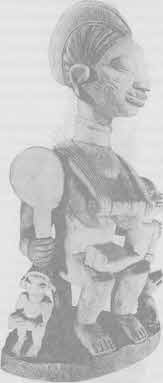
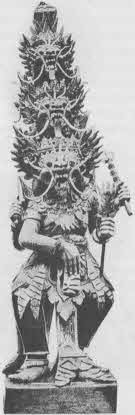

Çağrıyı reddetmemiş olanlar için, kahramanın yolculuğunun ilk karşılaşması, maceracıya aşacağı ejder güçlere karşı tılsımlar sağlayan, koruyucu bir figürle (genellikle ufak tefek yaşlı bir kadın ya da erkek) olandır.
Örneğin bir Doğu Afrika kabilesi, Tanganyikalı Wachagalar, umutsuzluk içinde güneşin doğduğu ülkeye doğru yola çıkan, Kyazimba adlı çok yoksul bir adamdan söz eder. Uzun zaman yol almış ve yorulmuştu; öylesine durmuş, gittiği yöne doğru umutsuzca bakıyordu, birden peşinden birinin geldiğini duydu. Döndü ve eli ayağı tutmaz, ufak tefek bir kadın gördü. Kadın yanına yaklaşıp orada ne aradığını sordu. Ne aradığını söylediği zaman, elbisesini onun etrafına doladı ve topraktan havalanarak onu güneşin günün ortasında duraksadığı o zirveye götürdü. Sonra büyük bir gürültü patırtıyla oraya doğudan bir takım adamlar geldi ve aralarında, gelir gelmez bir inek parçalayıp yardımcılarıyla birlikte yemeğe oturan parlak bir şef vardı. Yaşlı kadın ondan Kyazimba için yardım istedi. Şef adamı kutsadı ve eve gönderdi. Ve dediklerine göre ondan sonra adam zenginlik içinde yaşamış.{87}
Güneybatıdaki Amerikan Kızılderilileri arasında bu müşfik roldeki sevilen kişilik, yeraltında yaşayan büyükanne benzeri ufak tefek bir kadın olan Örümcek Kadın’dır. Navaho’ların ikiz Savaş Tanrısı babaları olan Güneş’in evine doğru kutsal bir yolu izleyerek giderken, bu ufak tefek harika insana rastladılar: “Oğlanlar kutsal yolda hızla gidiyordu ve gündoğumundan hemen sonra, Dsilnaotil yakınlarında, yerden duman çıktığını gördüler. Dumanın çıktığı yere gittiler ve yeraltındaki bir evin bacasından çıktığını gördüler. Dumandan kapkara olmuş bir merdiven delikten aşağı uzanıyordu. Evin içine doğru baktıkları zaman içerideki yaşlı kadın, Örümcek Kadın şöyle dedi: ‘Hoşgeldiniz çocuklar. Girin. Kimsiniz, böyle yürüyerek nerelerden geliyorsunuz?’ Yanıtlamadılar, ama delikten aşağı indiler. Zemine vardıklarında onlara yine sordu: ikiniz birlikte nereye yürüyorsunuz?’ ‘Belli bir yere değil,’ dediler; ‘buraya geldik, çünkü gidecek başka yerimiz yoktu.’ Bu soruyu dört kez sordu ve her seferinde benzer bir yanıt aldı. O zaman şöyle dedi: ‘Belki de babanızı arıyordunuz?’ ‘Evet,’ dediler, ‘keşke bir de yaşadığı yeri bilseydik.’ ‘Ah!’ dedi kadın, ‘babanızın, Güneş’in evine giden yol uzun ve tehlikelidir. Burasıyla orası arasında yaşayan bir sürü canavar vardır hem belki, oraya vardığınızda, babanız sizi gördüğüne memnun olmayıp sizi cezalandırabilir. Dört tehlikeli yerden geçmelisiniz - yolcuyu ezen kayalar, parça parça kesen çalılar, paramparça eden kaktüsler ve yutan kaynar kumlar. Ama ben size düşmanlarınızı atlatıp yaşamda kalmanızı sağlayacak bir şey vereceğim.’ Onlara, yaşamlarını korumaları için, üzerine iki yaşam tüyü (tüyler canlı bir kartaldan kopartılmıştı) takılmış bir çember ve bir de başka yaşam tüyünden oluşan ‘yabancı tanrıların tüyü’ denen bir büyü verdi. Ayrıca eğer düşmanlarına doğru tekrarlanırsa onların kızgınlıklarını bastıracak şu büyülü formülü verdi: ‘Ayaklarını polene bas. Ellerini polene bas. Başını polene bas. O zaman ayakların polenli; ellerin polenli; vücudun polenli; zihnin polenli; sesin polenli olur. Sınav güzel. Öyle dur.’”{88}
Yardımsever kocakarı ve iyi tanrıça rolü Avrupa peribiliminin de tanıdığı bir özelliktir; Hıristiyan aziz efsanelerinde bu rol genellikle Bakire tarafından üstlenilir. Bakire aracılık yaparak Baba’nın merhametini kazanabilir. Örümcek Kadın ağıyla Güneş’in hareketlerini denetleyebilir. Kozmik Anne’nin korumasına giren kahramana bir zarar verilemez. Ariadne’nin ipliği Theseus’u labirent macerasından korunaklı biçimde çıkardı. Bu, Dante’nin yapıtında Beatrice ve Bakire dişi figürlerinde ve Goethe’nin Faust’unda başarılı biçimde Gretchen, Troialı Helen ve Bakire olarak beliren rehber güçtür. “Sen canlı bir umut kaynağısın,” diye dua eder Dante, Üç Dünya’nın belalarından korunaklı geçişinin sonunda; “Hanım, sen öyle büyük ve öyle yararlısın ki, onur sahibi olan ve senden yardım dilememiş olanların arzusu kanatsız uçacaktır. Senin iyi kalpliliğin sırf sorana değil, bazen sorulana da yardım eder. Sende merhamet, acıma, ululuk, bütün yaratıklarda ne kadar iyilik varsa bir araya gelmiştir.”{89}
Böyle bir figürün temsil ettiği şey kaderin iyi kalpli, koruyucu gücüdür. Fantezi bir güvencedir - ilk kez anne karnında tanınan Cennetin huzurunun kaybolmayacağına; şimdiyi desteklediğine ve geçmişte olduğu gibi gelecekte de durduğuna (alfa olduğu kadar omega olduğuna); eşik geçişleri ve yaşam uyanışlarıyla tehlikeye düşer gibi olsa bile, koruyucu gücün kalbin tapınağında ve dünyanın tuhaf özelliklerinin içinde ya da hemen ardında daima hazır olduğuna dair bir güvencedir. Kişinin bilip güven duyması yeter, yaşı bilinmeyen muhafızlar belirecektir.

Levha III. Tanrıların Anası (Nijerya).

Levha IV. Tanrı Savaş Giysileriyle (Bali).
Kendisine yapılan çağrıya yanıt verdikten sonra ve olaylar ortaya çıktıkça cesaretle ilerlemeyi sürdüren kahraman bilinçdışının bütün güçlerini yanında bulur. Doğa Ananın kendisi zor görevi destekler. Ve kahramanın eylemi, toplumunun hazır olduğu şeyle uyum gösterdiği sürece, tarihsel sürecin büyük ritmi üzerinde ilerliyor gibidir. “Kendimi,” demişti Napolyon Rus harekatının başlarında, “bilmediğim bir sona çekilir gibi hissediyorum. Ona ulaşır ulaşmaz, ben gereksiz hale gelir gelmez, bir atom bile beni dağıtmaya yetecek. O zamana dek, insanlığın bütün güçleri bana karşı hiçbir şey yapamaz.{90}
Doğaüstü yardımcının biçim olarak erkek olması seyrek görülmez. Peri kültüründe o ormandaki küçük bir adam, kahramanın ihtiyaç duyacağı tılsımları ve öğütleri sağlayacak bir büyücü, keşiş, çoban, ya da demirci olabilir. Daha yüksek mitolojiler, bu rolü rehber, öğretmen, kayıkçı, ruhları öte dünyaya aktaran kişi figüründe geliştirir. Klasik [eski Yunan] mitlerinde bu Hermes-Merkür’dür; Mısır’da genellikle Thoth'tur (ibis tanrı, maymun tanrı); Hıristiyanlıkta Kutsal Ruh’tur.{91} Goethe Faust'ta erkek rehberini Mefistoteles olarak sunar - ve “merküre ait” figürün tehlikeli yönü sıklıkla öne çıkarılır; çünkü masum ruhu sınav alanına sürükleyen odur. Dante’nin hayalinde bu kısım Cennet’in eşiğinde Beatrice’i ortaya çıkaran Vergilius tarafından oynanır. Koruyucu ve tehlikeli, aynı anda hem anne hem de baba olan bu doğaüstü muhafızlık ve yön ilkesi kendinde bilinçdışının bütün belirsizliklerini birleştirir - böylece bilinçli kişiliğimizin bu diğer, daha geniş sistemden aldığı desteği, fakat aynı zamanda bütün akılcı amaçlarımızın tehlikesine doğru izlediğimiz rehberin sırlarla dolu oluşunu da belirterek.{92}
Böyle bir yardımcının göründüğü kahraman belli ki çağrıya yanıt vermiş biridir. Çağrı, gerçekte bu erginleyen rahibin yaklaştığının ilk belirtisiydi. Fakat kalplerini katılaştırmış olanlara bile doğaüstü muhafız görünebilir; çünkü gördüğümüz gibi: “Allah kurtarmaya da kadirdir.”
Böyle de oldu, sanki şansmış gibi, tranlı prens Karnerüzzaman’ın uyuduğu eski ve terkedilmiş kulede eski bir Roma kuyusu vardı{93} ve burada Maymunah adında, Cinlerin ünlü bir kralı olan El-Dimiryat’ın kızı, Lanetlenmiş İblis soyundan bir Cin yaşıyordu.{94} Ve Kamerüzzaman gecenin ilk üçte birinde uyumayı sürdürürken, Maymunah Roma kuyusundan çıktı ve gizlice meleklerin konuşmasını dinlemek için semaya yöneldi; fakat kuyunun ağzına varıp da kulenin odasında alışık olduğunun aksine, bir ışık görünce, meraklandı, yaklaşıp odaya girdi ve baş ucunda bir mum, ayak ucunda bir lamba yanan bir insanın yattığı yatağa yanaştı. Kanatlarını kapadı ve yatağın ucunda durdu ve örtüyü çekince Kamerüzzaman’ın yüzünü gördü. Ve bir saat hayranlık ve şaşkınlıkla öylece hareketsiz durdu. “Maşallah,” dedi kendine geldiğinde, “Yüce Rabbim!”, çünkü o inançlı bir Cindi.
Sonra Kamerüzzaman’a zarar vermeyeceğine söz verdi kendi kendine ve onun eğer bu ıssız yerde kalırsa, akrabaları olan Maridler tarafından katledileceğini düşündü.{95} Eğilip gözlerinin arasından öptü ve örtüyü yüzüne geri örttü; ve bir süre sonra kanatlarını açıp göğe yükselerek cennetlerin en alçağına varıncaya dek yukarı uçtu.
Sonra şans ya da kader gibi, yükselen İfrit Maymunah, ansızın yakınlarında bir kanat sesi duydu. Sese doğru yönelince Dahnaş adlı bir İfritten geldiğini anladı. Bir şahin gibi saldırdı ve o da bunu farkedip de gelenin Cinler kralının kızı Maymunah olduğunu anlayınca korkuya kapıldı ve kasları yumuşayıverdi, bıraktı kız saldırsın. Fakat kız onun gecenin bu vaktinde nereden geldiğini söylemesini istedi. O da, Çin'deki Adalar ve Denizler ve Yedi Saray’ın Efendisi Şah Ghayur’un toprağından, İçdeniz Adaları’ndan döndüğünü söyledi.
“Orada,” dedi, “Allah’ın daha güzelini yaratmadığı kızını gördüm onun.” Ve hemen Prenses Budur’u övmeye koyuldu. “Bir burnu vardı,” dedi, “bilenmiş bıçak sırtı gibi ve yanakları pembe şarap ya da kan kırmızı Manisa laleleri gibi: dudakları mercan ve akik taşı parlaklığında ve ağzının suyu yıllanmış şaraptan daha tatlı; onu tatmak cehennemin en şiddetli acısını dindirir. Dili kıvrak zekayla kıpırdıyor ve hazırcevap: göğsü onu gören herkesi baştan çıkarıyor (onu işleyen ve tamamlayan Ona şükürler olsun!); ve oradan pürüzsüz ve yuvarlak iki kol uzanıyor; şair el-Valahan’ın onun için dediği gibi:
Öyle bilekleri var ki, bilezikleri tutmasa,
Yenlerinden gümüş yağmur gibi dökülecek. ”
Güzelliğinin kutsaması sürdü ve Maymunah bunu dinlerken hayranlıktan sessiz kaldı. Dahnaş babası olan güçlü kralı, hâzinelerini, Yedi Saray’ı ve kızın evlenmeyi reddedişini anlattı, sözlerini bitirdi.
“Ve efendim,” dedi, “ben her gece ona gidip yüzünde gözlerimi doyurma payımı alıyorum ve gözlerinin arasından öpüyorum: yine de, aşkım yüzünden onu incitmiyorum.” Maymunah’ın onunla Çin'e uçup prensesin güzelliğine, sevimliliğine, görkemine ve ölçülerinin mükemmelliğine bakmasını istedi. “Ve sonra, eğer istersen,” dedi, “ödüllendir ya da cezalandır beni; çünkü sensin emreden ve yasaklayan.”
Maymunah, az önce Kamerüzzaman’ı görmüşken, yeryüzündeki başka bir yaratığın kutsanmayı hak edeceğine inanmıyordu. “Pöh! Pöh!” diye bağırdı. Dahnaş’a güldü ve öfkeyle yüzüne bağırdı. “Doğrusu, bu akşam bir genç adam gördüm,” dedi, “öyle ki, eğer bir düşte görseydin hayranlıktan dona kalırdın ve açık ağzından salyalar akardı.” Ve o da gördüğünü anlattı. Dahnaş kimsenin Prenses Budur’dan güzel olacağına inanmadığını söyledi ve Maymunah ona onunla aşağı gelip bakmasını emretti.
“Duydum ve emre uyuyorum,” dedi Dahnaş.
Böylece alçaldılar ve salona girdiler. Maymunah Dahnaş’ı yatağın yanına getirdi ve elini uzatıp Kamerüzzaman’ın parıldayan, ışıldayan ve doğan güneş gibi yanan yüzündeki ipek örtüyü kaldırdı. Bir an ona bakakaldı ve sonra Dahnaş’a sertçe dönüp şöyle dedi: “Bak, ey lanetlenmiş ve sakın delirme; kız oğlan kızım ben, ama kalbimi çalıverdi bu.”
“Allah’a şükredin, Efendim, O affeder sizi,” dedi Dahnaş; “fakat bir şey daha var, o da şu, kadının hali erkeğinkinden başkadır. Allah’ın gücüyle, sevdiğiniz, güzellikte ve sevimlilikte ve görkem ve mükemmellikte benim prensesime yaratıkların içinde en çok benzeyen şey; ve sanki bir elmanın iki yarısı gibiler.”
Bunları duyduğu zaman ışık karanlık oldu Maymunah’ın gözünde ve kanadıyla Dahnaş’ın başına öyle güçlü bir darbe indirdi ki az kalsın sonu olacaktı bu darbe onun. “Diyorum ki,” diye emretti, “aşkımın ışığının şerefli izniyle hemen git, lanetlenmiş şey ve böyle sadık ve budalaca sevdiğin prensesini getir buraya ve çabuk gel ki ikisini yan yana yatırıp uyurlarken bakabilelim; böylece anlarız hangisi daha iyi ve daha güzel.”
Ve böylece, tamamen bilinçdışında olup biten bir şeyler sayesinde, yaşamdan vazgeçmiş olan Kamerüzzaman'ın kaderi, bilinçli iradesinin yardımı olmadan gerçek olmaya başladı.{96}